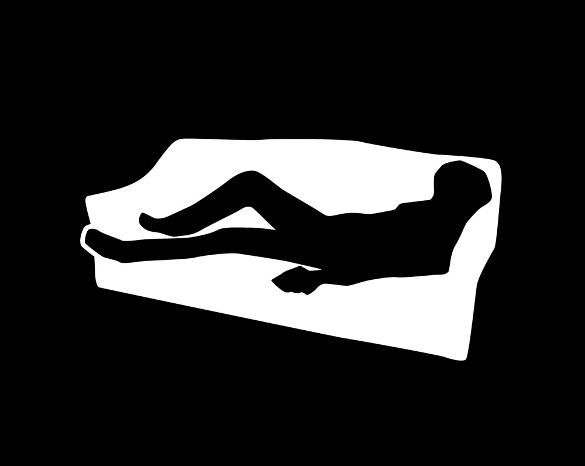

from the hood
Buceo
RR es una imprenta de etiquetas con una enorme cantidad de clientes. Allí formamos un equipo de diseño increíble con Cristian Recoba y el sensei Daniel Gandolfo. Tomamos iniciativa en desarrollar nuevos canales en los que pueda expandirse un negocio como es una imprenta industrial y comercial. Siempre partiendo del arte de la impresión, de lo que implica en cuanto trabajo manual, de sus procesos de trabajo en cadena y la responsabilidad de cada eslabón.
A pesar de la rigidez comercial que suelen tener las industrias tradicionales en Uruguay, creo que nos desenvolvimos con la mayor libertad creativa que pudimos obtener. Siempre tensando la cuerda entre las relaciones comerciales y el trabajo de diseño, conseguimos resultados muchas veces satisfactorios y sobre todo, logramos darle un poco de color a la monotonía rutinaria del trabajo en la fábrica.
Diseño de identidad y comunicación
Diseño web, fotografía institucional, fotografía de producto, diseño de comunicación en redes sociales, diseño editorial, desarrollo de material y papelería institucional.
#Branding, marca, institucional, presencia, imagen, web.

Diseño de producto para imprenta
Diseño gráfico para producción y pre-prensa en trabajos de imprenta en flexografía. Diseño de etiquetas, marcas y productos para clientes con estrictos controles de calidad.